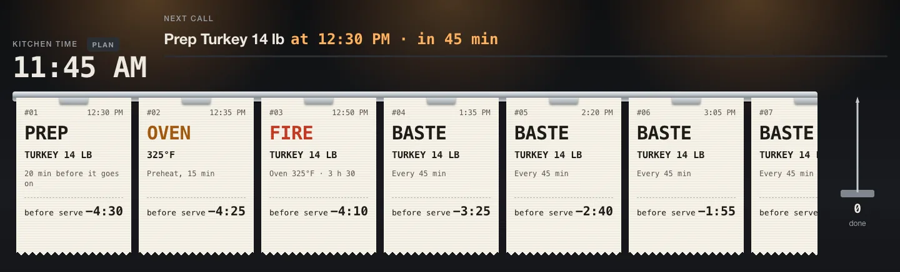
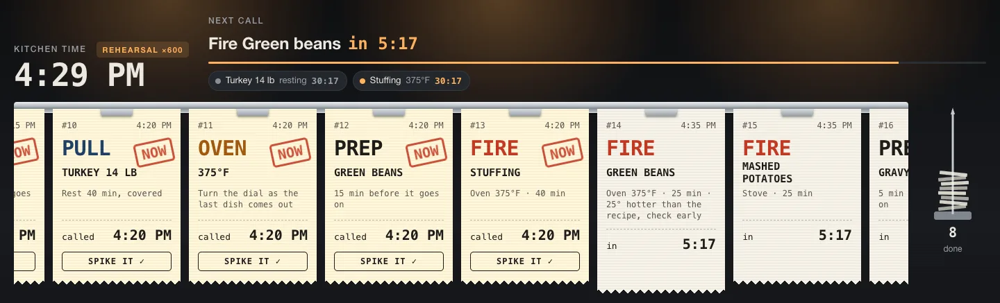
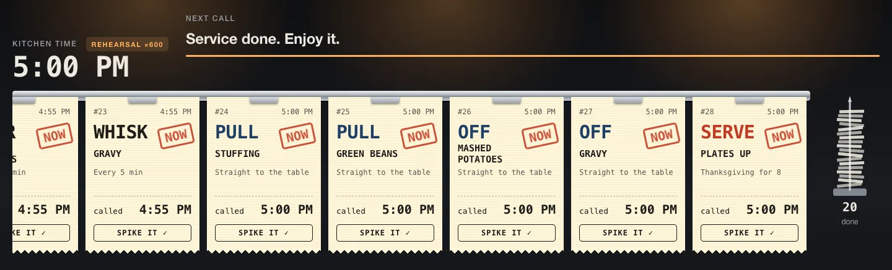
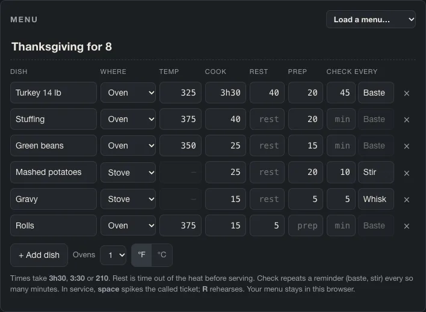
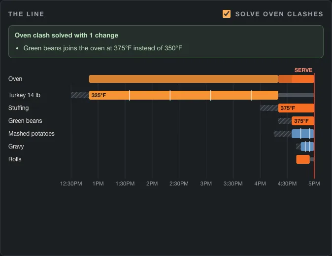
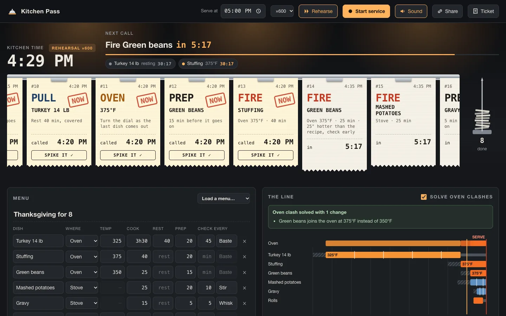
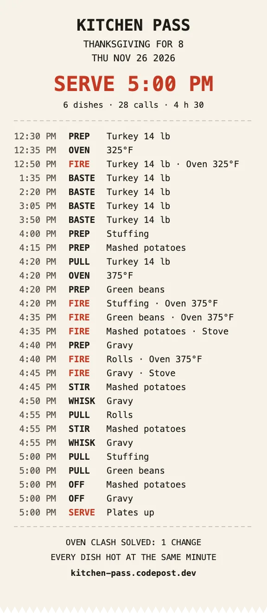
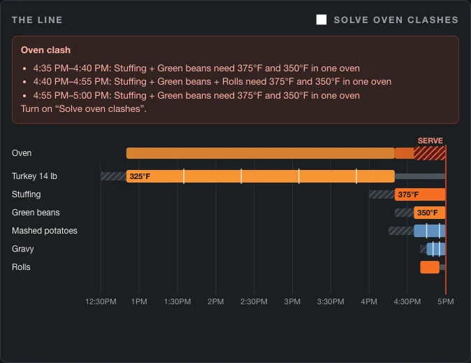

Kitchen timer for the whole dinner
Enter each dish and your serve time. Kitchen Pass works backwards and calls every step on a ticket.
Kitchen Pass calls each step on a chit
Every step prints as a chit with its own countdown. At its minute a bell rings, the chit takes a NOW stamp and a voice calls it: “Fire the stuffing.” Tap Spike it once it’s done.



Before service every chit shows how long before serve it is called.
Rehearse plays the whole dinner at ×120, ×240 or ×600 speed, with a strip of what is on the heat.
At 5:00 PM the last chits call together and the spindle holds the rest.
How Kitchen Pass times a dinner
-
Enter the dishes and a serve time
Where each dish cooks, its oven temperature, cook, rest and prep time, and a check such as Baste every 45 min.

-
Kitchen Pass solves oven clashes
One oven can’t hold 350°F and 375°F at once. Kitchen Pass shares a temperature within 25°F, or finishes a dish early and holds it warm.

-
Rehearse it, then start service
Rehearse runs the dinner fast. Start service runs it on the real clock, shows what is on the heat, keeps the screen awake and notifies you when the tab is hidden.

Thanksgiving for 8 on one prep ticket
The built-in preset has six dishes and serves at 5:00 PM. Ticket saves every call as a PNG receipt for the fridge door.
- 28 calls
- From Prep turkey at 12:30 PM to Serve at 5:00 PM: 4 h 30 of cooking.
- 12:50 PM
- The 14 lb turkey goes in at 325°F. It comes out at 4:20 PM to rest 40 min.
- 1 clash
- Green beans join the stuffing at 375°F instead of 350°F, with a note to check early.

Kitchen timer apps compared
Most multi-dish timers charge for the fourth dish or the second oven. Kitchen Pass has no dish cap and no paid tier.
Kitchen Pass also solves oven clashes and calls each step out loud, and its code is open. Chef’s Multi-Dish Timer and Taskade’s free web kitchen-timer kit time several dishes too. Prices and limits as listed on the App Store, Nov 2026. Get Kitchen Pass

Questions about Kitchen Pass
About ovens, alerts, sharing and the licence.
Does Kitchen Pass need the internet?
No. It is one HTML file, and once it is open it runs offline in any browser. Your menu stays in that browser.
How does Kitchen Pass handle two oven temperatures?
With one oven, Kitchen Pass finishes a dish early and holds it warm, or shares a temperature within 25°F with a note to check early or late.
Does Kitchen Pass work in °C and with two ovens?
Yes. Switch °F and °C under the menu, next to Ovens, and set Ovens to 1 or 2.
What if I start cooking late?
Kitchen Pass tells you which steps you missed and offers the earliest serve time that still lands every dish hot. One tap moves dinner there.
Will it call a step when I’m in another tab?
In service it keeps the screen awake, and sends a notification at each call while the tab is hidden.
How do I share a menu with another cook?
Share copies a link that carries the whole menu. Nothing is uploaded.
What does AGPL-3.0 let me do?
Read the code, change it and run your own copy. If you share a changed version, share its code too.
Kitchen Pass is free, and so is its code
No account, no dish cap. Open it in your browser and it keeps working offline. The code is open under AGPL-3.0, by Harman Kamboj.